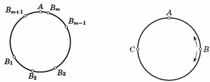

Problem ID 66092
Three cyclists travel in one direction along a circular track that is 300 meters long. Each of them moves with a constant speed, with all of their speeds being different. A photographer will be able to make a successful photograph of the cyclists, if all of them are on some part of the track which has a length of d meters. What is the smallest value of d for which the photographer will be able to make a successful photograph sooner or later?
Solution
Without loss of generality, we assume that all cyclists travel the track counter-clockwise, the first of them being the fastest and the third being the slowest. Consider the movement of the cyclists with reference to the second cyclist. Then the second cyclist is constantly at some point A, and the first and third move counter clockwise and clockwise, respectively. They periodically meet with each other at regular intervals. Denote by $B_1, B_2, B_3,$ ... the consecutive points of their meetings from the beginning of the observation of these athletes $($Figure left$)$. Every two adjacent points $B_n$ and $B_{n + 1}$ $($where n is an arbitrary natural number$)$ are different, since the first cyclist cannot make a full circle counter clockwise, without meeting the third one. We denote by $β_n$ the smaller of the two arcs of the track with endpoints $B_n, B_{n + 1}$. Its length does not exceed 150 m. Since the meetings occur periodically with a shift in one direction, all the arcs βn are equal to each other and the union of several of them covers the whole track. Hence, there is an arc $β_m$ containing the point A. The length of one of the arcs $B_m$A or A$B_{m + 1}$ does not exceed 75 m. Thus, at some point of the meeting of the first and third cyclists they will be no more than 75 m from the second cyclist. Therefore, the photographer will be able to make a successful shot, if d$\geq$75.

Let us give an example of the movement of cyclists, in which they cannot be on any part of the track with a length of less than 75 m at any time. Let the first and third cyclists move with respect to point A with velocities equal in magnitude but different in direction, and in the initial moment they are at the point B, separated from A by a quarter of the circle $($Figure on the right$)$. Then they will meet alternately at the diametrically opposite points B and C $($a distance from A of 75 m$)$, and their positions at each moment in time will be symmetrical with respect to the straight line BC. Hence, at each moment in time the distance from one of them to point A will be no less than 75 m.
Answer
75